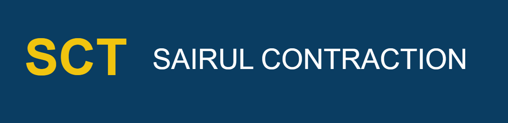

Residential, commercial, and industrial construction projects with high-quality materials and professional supervision.
Design and installation of high-voltage transmission lines and electrical distribution systems.
Complete substation development including civil works, equipment installation, and commissioning.
Ongoing maintenance and repair services for infrastructure and electrical transmission systems.
End-to-end planning, supervision, and execution of construction and transmission projects.